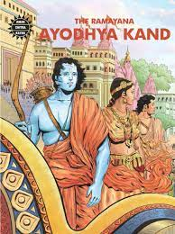

|  |
Ayodhya Kanda contains the events that lead to his exile the forests for fourteen years. Having been married for twelve years, Dasharatha decides to pass on the throne to Rama, a decision which is positively affirmed by every member of the Kosala assembly and also the subjects. A day prior to the grand crowning of Rama, Manthara, a cunning maidservant aroused the jealousy of Kaikeyi, due to which Kaikeyi claims two wishes that was granted to her by Dasharatha long ago, her first wish being that Rama should be sent to exile into the forests for fourteen years and the second that the throne should be passed to her son, Bharata. Dasharatha, known as a king who always fulfills his promises, was in the middle of a very precarious situation. Rama lightens his burden by accepting the banishment with absolute calm and self control. He is joined by Sita and Lakshmana. Even though he refuses Sita to join him, the selfless love of Sita could not see her husband going alone in the forests for fourteen years. Bharata, who was away, declines to accept the crown because of his mother’s wicked tactics. He requests Rama to return, but Rama, a loyal and devoted son, chose to carry out his father’s orders , and says that he won’t return till the tenure of the exile is complete. Bharata, then takes Rama’s sandals and places it on the throne, where he rules on Rama’s behalf.
|
|---|
| Back | Home Page |